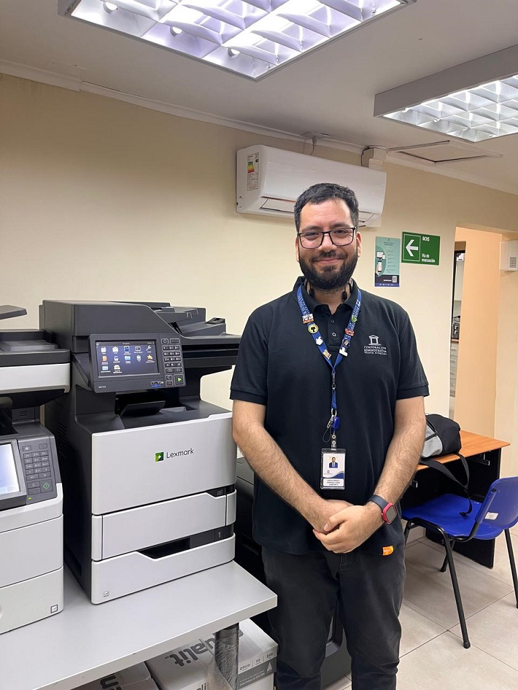

- 17-10-2024
- Informática
- Corporación Administrativa
El Departamento de Informática ha concurrido al Centro de Notificaciones para llevar a cabo una importante mantención preventiva. La intervención se realizó con el objetivo de garantizar la continuidad operativa del sistema, evitando posibles interrupciones que puedan afectar el flujo de trabajo.
El equipo técnico procedió al reemplazo del kit de mantenimiento de la multifuncional Lexmark MX722, una acción esencial para asegurar el correcto funcionamiento de los equipos y la infraestructura tecnológica. Este tipo de mantenimiento es parte del plan estratégico de prevención que busca anticiparse a fallos o desgastes que podrían impactar la operatividad del centro.
"Nuestra prioridad es mantener los sistemas funcionando de manera óptima, y esta intervención es crucial para asegurar que no existan interrupciones en la entrega de los servicios tecnológicos," explicó el encargado de informática.
Además de las tareas realizadas en el Centro de Notificaciones, los informáticos entregaron suministros de impresión al 4º Juzgado de Letras de Copiapó para garantizar la continuidad en las labores administrativas. Asimismo, se llevó a cabo el reemplazo de una pantalla en el 2º Juzgado de Letras de Copiapó, ya que esta había comenzado a presentar fallas que podían comprometer su correcto funcionamiento.
Este mantenimiento no afectará las operaciones del centro, ya que fue planificado para realizarse en horarios que minimizan cualquier impacto en el servicio.
El Departamento de Informática reafirma su compromiso con la mejora continua de los sistemas y con la entrega de soluciones tecnológicas que garanticen la eficiencia y disponibilidad operativa de los servicios.
